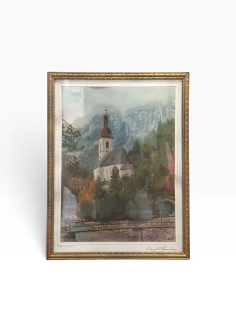
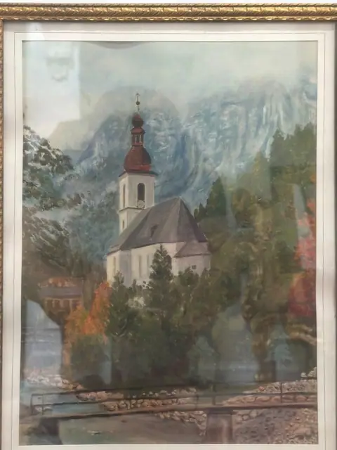
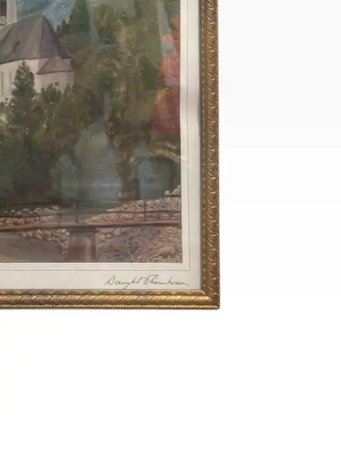
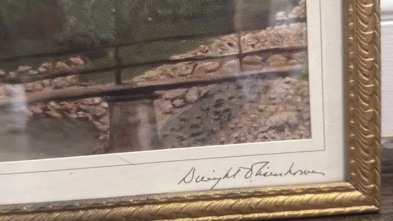
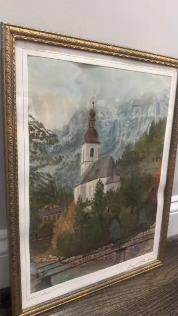
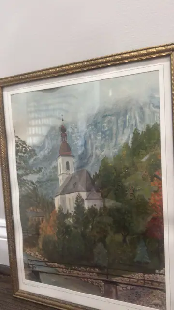
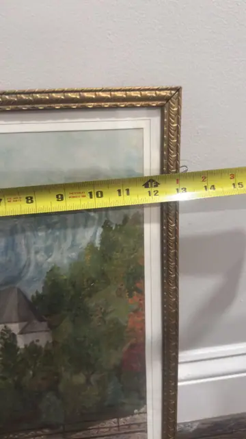
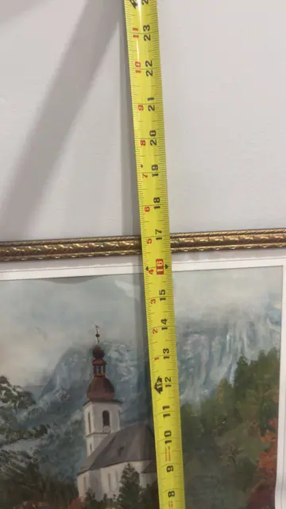

Paintings & Prints
Church in Bavaria
Dwight D. Eisenhower · 20th century
Price Upon Request









About the Item
A serene Bavarian church with its onion-domed tower nestles among autumn trees beneath misty Alpine peaks, rendered in the gentle, nostalgic manner of Eisenhower's own brush. Printed with the title 'CHURCH IN BAVARIA' and presented in a classic gilt frame with a wide ivory mat. A rare and evocative presidential collectible with genuine historic charm. Signature lower right on the mat reads 'Dwight D. Eisenhower' (legible in enlarged crop); title 'CHURCH IN BAVARIA' printed lower left. Matches the documented Eisenhower Christmas prints — auction records (Weschler's) list four Eisenhower color lithographs (1955–1960) including 'Church in Bavaria', framed 14-1/2 x 18-1/2 in; that size is an external reference for a comparable lot, not verified for this piece. Tape-measure photos are partial — dimensions listed as not legible. Signature detail: Signed lower right 'Dwight D. Eisenhower' (on the mat).
Details
- Creator:
- Dwight D. Eisenhower
- Creation Year:
- 20th century
- Medium:
- Color lithograph
- Period:
- 20Th
- Condition:
- Offered in the condition shown in the photographs.
- Reference Number:
- VO-299